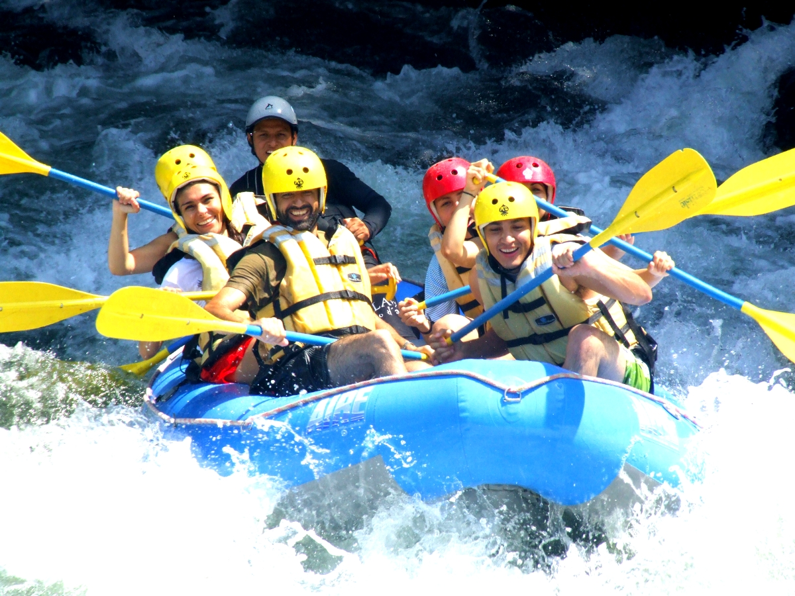
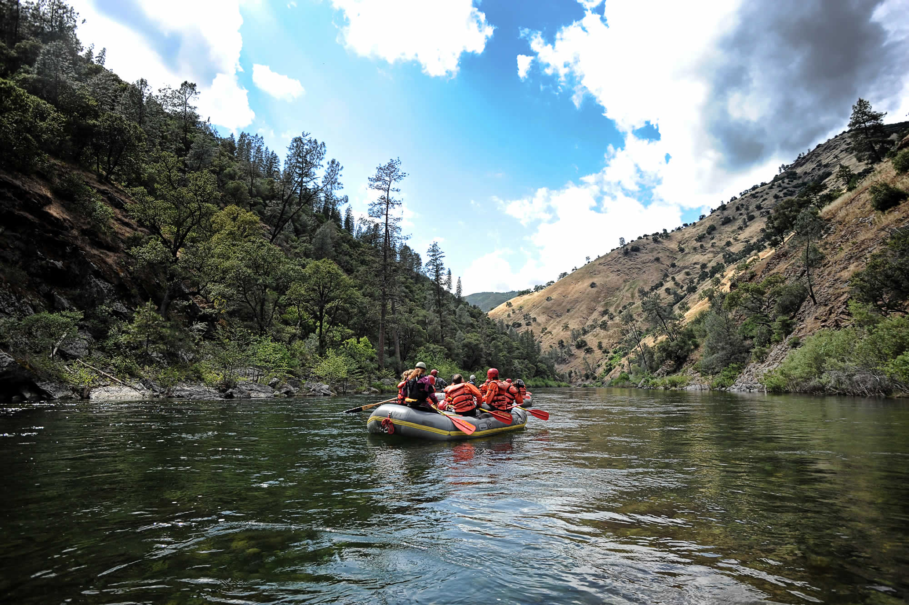
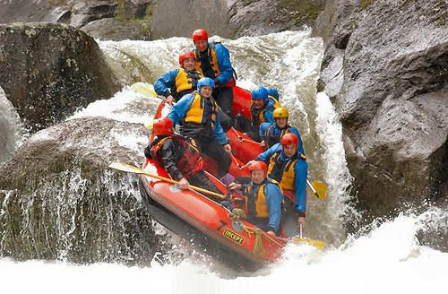

The Actopan River is known for its exciting rapids and
crystal-clear waters. This rafting trip is perfect for both beginners
and experienced rafters, offering a mix of class II and III rapids.
The journey includes stunning views of the tropical jungle and rock
formations, as well as opportunities to swim in refreshing waters and
explore small waterfalls along the river.

The Filobobos River offers one of the most thrilling
rafting experiences in Veracruz. With rapids ranging from class
III to IV, this trip is ideal for adventure seekers. The river
flows through lush landscapes, ancient ruins, and beautiful
canyons. Along the way, rafters can enjoy the sight of exotic
wildlife and stop for a swim in natural pools.

The Pescados River is a favorite among rafters for its
continuous and challenging rapids. This trip features class III
and IV rapids that provide an adrenaline rush while navigating
through breathtaking scenery. The river's route includes verdant
vegetation, unique rock formations, and spots where rafters can
take a break to appreciate the serene environment.